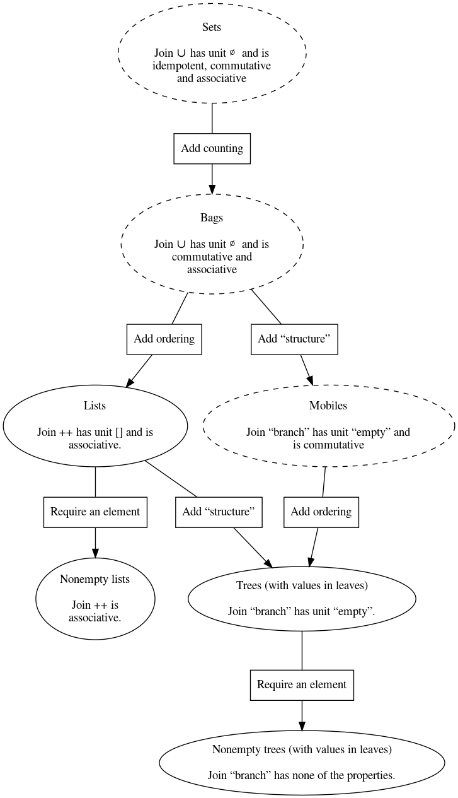

The Boom hierarchy in Scala
Table of Contents
1 Introduction
These notes were created for, and in some parts during, the lecture on September 14th and the following tutorials.
2 Motivation
2.1 Scala as an object-oriented language
Scala is a purely-object oriented language, meaning that every value is an object (contrast this with languages such as Java where some values are “basic” and not objects).
Scala interops with Java, meaning that Java libraries can be used in Scala code. It also supports many Java abstractions/constructs, so it can be a (fairly) comfortable transition for Java programmers.
For instance, if we want to define a linked list type in Scala, we can take an approach similar to what we might do in Java. (This is a very naive definition and usage, but it serves to prove the point.)
// Type annotations come after names, and are separated by a `:`. // The `var` keyword indicates a variable. class LinkedList[A](var hd: A, var tl: LinkedList[A]) { // Methods/functions are type annotated like values. // Scala uses an `=` in method/function declarations. // to emphasise that they should return a value. def head: A = { hd // No semicolons necessary; a newline will do. } // No braces are needed if the right side's a single expression. def tail: LinkedList[A] = tl } // `val`'s are constant, unlike `var`'s. val l1: LinkedList[Int] = new LinkedList[Int](1, null) // There's no need to specify a type if Scala can infer it. // Here it can see that the type parameter `A` is `Int` on the right. val l2: LinkedList[Int] = new LinkedList(2, l1) // In fact, it can tell the type of the `val` too. val l3 = new LinkedList(3, l2) // Let's define a value as a quick sanity test. val test1 = l1.head == 1
But this is only one part of Scala, and for our purposes it's the less interesting part. (We could just use Java for this much.)
2.2 Scala as a functional language
We are interested in Scala primarily because it supports functional abstractions.
The distinguishing abstractions of functional programming languages are:
- Functions are values, i.e., data.
- This is referred to by the term “first-class functions”, implying that functions are not excluded from being treated as data.
- This allows for higher-order functions; functions which take other functions as argument.
- All values (data) are immutable.
- (At least in “pure” functional languages.)
- Variables still change throughout the program,
but only because they are bound to different values
at different points in the runtime.
Not because an assignment/update was carried out.
- For instance, in a recursive call, the arguments change.
We will concern ourselves with (1) another time. For today, we are considering (2).
Briefly, the advantage to immutable data is that enables the programmer a level of certainty that is not available if data is mutable.
Consider for a moment this pseudocode regarding our earlier linked lists.
// This is pseudocode val l1: LinkedList[Int] = … // Some complicated list creation somebodyElsesFunction(l1)
What can I say about my list l1 after I run “somebody else's”
function on it?
Answer: not much! It could have changed in many ways, so anything I knew about it may no longer be true.
2.2.1 Aside: Downside to immutability
There is a not insignificant downside to enforcing immutability in a language/code base.
If all data is immutable, then to “make changes” to a value (such as a list or a tree), we must in fact make a copy of that value with the changes we want applied.
As you can imagine, this copying is expensive, both in terms of space and time.
However, well-designed languages can mitigate this in various ways, including by having values “share” some pieces of themselves.
3 The (extended) Boom hierarchy theory
We now briefly take with a (relatively brief) dive into some theory, to give us an example type to consider in Scala.
3.1 Introduction
The Boom hierarchy was introduced by Lambert Meertens in Algorithmics — Towards programming as a mathematical activity; Meertens attributes the concept to H. J. Boom, hence the name.
The Boom hierachy is a family of data structures
—namely trees, lists, bags and sets—
for which we have an empty value and can construct singleton values,
and which include a join operation
(for sets and bags also called union, written ∪,
and for lists also called append, ++).
:TODO: Notation:
[]for empty,[a]for a singleton containinga,++for append.
The basic idea of the hierarchy is that
- sets have a
joinoperation which- has an identity
A ∪ ∅ = A, - is idempotent
A ∪ A = A, - is commutative
A ∪ B = B ∪ A, and - is associative
A ∪ (B ∪ C) = (A ∪ B) ∪ C. Then,
- has an identity
- bags are like sets, except the
joinoperation is not idempotent, - lists are like bags, except the
joinoperation is not commutative, and - trees are like lists, except the
joinoperation is not associative.
The paper is interested in laws satisfied by the
higher-order functions reduce (often called fold),
map and filter over those structures.
3.2 Extending the Boom hierarchy
Alexander Bunkenburg's later paper
“The Boom Hierarchy”
investigates this area further, by considering
what data structures can be obtained by taking different combinations
of the above listed features of the join operation.
The abstract of that paper reads
“The Boom Hierarchy is the family of data structures tree, list, bag, set. By combining their properties in other ways, more data structures can be made, like mobiles. The paper defines the data structures of this extended Boom Hierarchy and shows how the functions reduce, map, and filter are applied to them.”
For instance, through this process we arrive at
- the
nonempty listdata structure ornonempty treedata structure, which lack an identity. - the
mobiledata structure, which are like trees except that they “can spin” (the branching order is arbitrary).
3.3 Visualising the Boom hierarchy
We can visualise the layout of some of these structures:

Not all of these types are easily representable in most programming languages; we can say they are abstract types instead of concrete types. I've highlighted the ones which are not in the diagram using dashed lines.
Exercise: Why are those types not easily represented in standard programming languages?
Exercise: Is it impossible for those types to be easily represented in a programming language?
4 The Boom hierarchy in Scala application
Heads up: this section consists of failed attempts and subsequent corrections. Read carefully, and double check before borrowing any code. Or skip to the next section.
Let us try to implement the lists discussed in the Boom hierarchy in Scala, and make them immutable, for the reasons discussed in Scala as a functional langauge.
4.1 The AppendList type
Let us implement the list type as described in the Boom hierarchy paper
in Scala. We'll call these AppendList, as they take Append as
the basic operation.
Extra heads up: there's a big flaw in defining lists this way, so even when we get it right we're wrong. We'll discuss the problem at the end.
Those lists have three cases;
- the
Emptylist, - the
Single-ton lists, and - the
Concat-enation of two lists.
The Scala convention for implementing types such as this that consist of a number of cases by first giving a super-type which a sub-type for each case will extend (extending is also called inheriting).
This super-type should not be instatiable, because we want to restrict instatiability to the given cases. (Recall from 2fa3: types should have no junk and no confusion.)
A trait is similar to a class, except it cannot be instantiated
—meaning it cannot be constructed.
It is similar to an interface in Java.
(This also makes it similar to an abstract class,
except it's more flexible; see
the Scala docs.)
trait AppendList[A] // sub-class definitions yet to come
In fact, in the interest of not introducing “junk”,
we should use the sealed keyword which prevents code
from outside this block from extending AppendList.
sealed trait AppendList[A] // sub-class definitions yet to come
4.2 Attempt 1 at defining cases of lists: basic classes
Now we need to add sub-types which are instantiable.
Note that every instance (value) of one of the sub-types
is also a value of the super-type.
So even though AppendList cannot be instantiated,
we can create AppendList values.
(Yes, this means a single value can have many types; specifically, it has a chain of types, each one a sub-type of the next).
Exercise: where does the chain end?
We can fill in a class for each case.
trait AppendList[A] class Empty[A]() extends AppendList[A] class Single[A](a: A) extends AppendList[A] class Concat[A](l: AppendList[A], r: AppendList[A]) extends AppendList[A]
But if we try out this definition, we may be disappointed.
val empty1 = new Empty[Int] val empty2 = new Empty[Int] val list1 = new Concat(new Single(1), new Single(2)) empty1 == empty2 // equality check
:TODO: why? what's so bad about the result of the equality check?
:TODO: The fact that this check failed tells me these are not the same in memory.
4.2.1 Aside: Notions of equality
:TODO:
4.3 Attempt 2 at defining cases of lists: case classes
Our class based definition above caused two instances
of the same list (same in the sense that their
construction was the same)
as different (unequal) lists.
The reason comes back to mutability.
A regular class may have mutable data (non-constant fields).
So the runtime is aware that empty1 and empty2 could
actually be different (even though, with just our definitions above,
there isn't a way to make them significantly different).
Since we intend to work with immutable data,
we need something more than just class.
Specifically, what we want is provided in
Scala by a case class.
A case class has no mutable state (no non-constant fields).
(Additionally all its fields are public).
sealed trait AppendList[A] case class Empty[A]() extends AppendList[A] case class Single[A](a: A) extends AppendList[A] case class Concat[A](l: AppendList[A], r: AppendList[A]) extends AppendList[A]
The name case class is used because
we often pattern match (or, equivalently, case split)
over types defined this way.
4.4 The inherent problem with AppendList
“Each data structure is the free algebra of its binary operation
++.”
This means, since a ++ [] = a by the identity law,
in the paper, a ++ [] and a will both be the same value of List.
Let's try that in Scala.
sealed trait AppendList[A] case class Empty[A]() extends AppendList[A] case class Single[A](a: A) extends AppendList[A] case class Concat[A](l: AppendList[A], r: AppendList[A]) extends AppendList[A] val listofone = Single(1) val anotherlistofone = Concat(listofone, Empty()) listofone == anotherlistofone
:TODO: We have confusion!
5 A proper implementation of lists in Scala.
type List a = Empty | Cons a (List a)
Our final, correct implementation ensures there is only one way to construct a given (abstract) list, by using “more concrete” constructors.
sealed trait ConsList[A] case class Empty[A]() extends ConsList[A] case class Cons[A](hd: A, tl: ConsList[A]) extends ConsList[A]
We can try out some definitions on this type.
def sum(xs: ConsList[Int]): Int = xs match { case Empty() => 0 case Cons(hd, tl) => hd + sum(tl) } def append[A](xs: ConsList[A], ys: ConsList[A]): ConsList[A] = xs match { case Empty() => ys case Cons(hd, tl) => Cons(hd, append(tl, ys)) }
val test = Cons(1,Cons(2,Cons(3,Empty()))) val test2 = Cons(1,Cons(2,Cons(3,Empty()))) append(test,test2)
6 Reset the REPL!
A nice feature of the Ammonite REPL for Scala is that you can save and load the session state, allowing you to more safely try things out and then restore to an earlier state if you need to. See https://ammonite.io/#Save/LoadSession
To save, run
repl.sess.save()
To load, run
repl.sess.load()
Note you can provide strings as arguments to name the states being saved/loaded.
If you don't use names, and need to restore an older state,
you can use repl.sess.pop(n) to pop n saved states off the session.
If you simply want to restart, just off an extreme number of saved states.
repl.sess.pop(999)